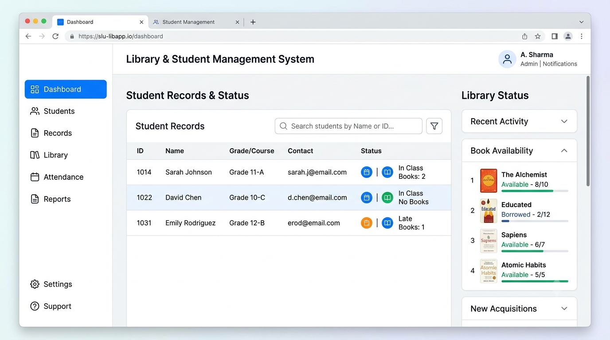
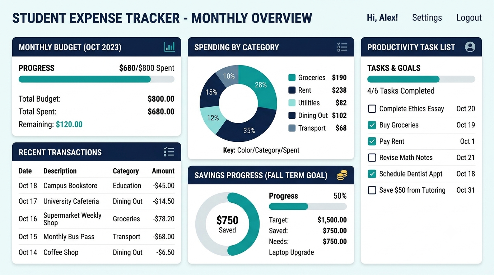
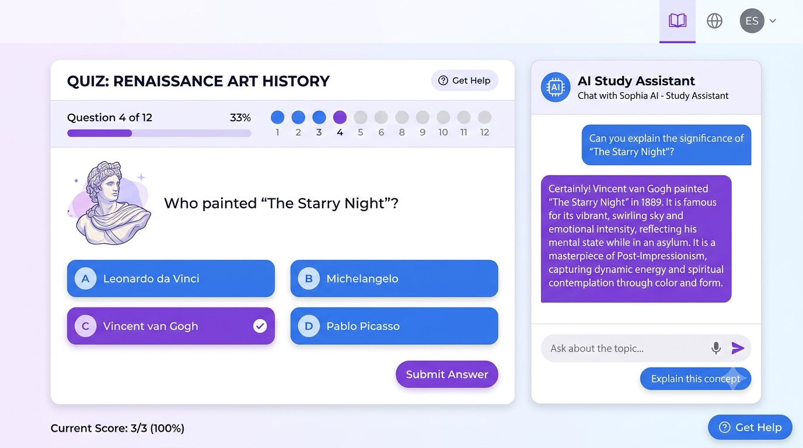
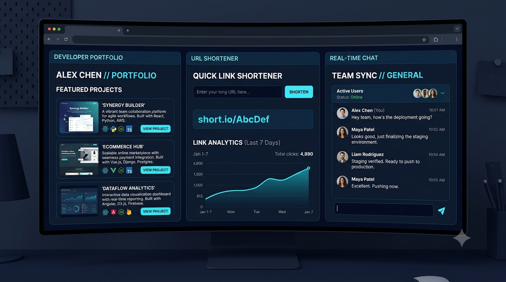
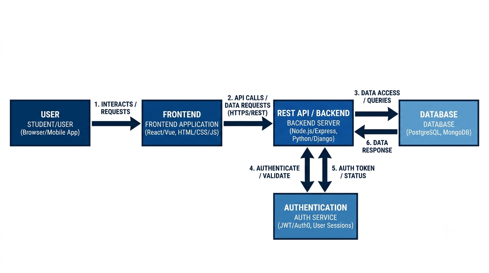

1. Quick Answer: 10 GitHub Projects for Computer Science Students
If you want the list first, start here. Each project can be built in stages, so you do not need to implement every advanced feature at once.
| Project | Difficulty | Best skills to demonstrate | Suggested starting stack |
|---|---|---|---|
| Student Management System | Beginner | Forms, validation, database relationships | Java + MySQL or Python + SQLite |
| Personal Expense Tracker | Beginner | Data modelling, filtering, summaries | HTML/CSS/JavaScript + local storage; later SQL |
| Online Quiz Platform | Beginner–Intermediate | Scoring logic, timers, test cases | JavaScript + Node.js + SQLite |
| Task and Productivity Manager | Beginner–Intermediate | CRUD, state management, date handling | React + Node.js or a simpler vanilla-JS version |
| Library Management System | Beginner–Intermediate | Relational data, transactions, search | Java + JDBC + MySQL |
| Job and Internship Application Tracker | Intermediate | Workflow design, dates, filtering | React + Express + PostgreSQL |
| URL Shortener with Analytics | Intermediate | HTTP routing, unique IDs, event tracking | Node.js + Express + SQLite/PostgreSQL |
| Developer Portfolio Website | Beginner | Frontend, responsive design, deployment | HTML + CSS + JavaScript |
| Real-Time Chat Application | Intermediate–Advanced | Authentication, sockets, access control | Node.js + Socket.IO + database |
| AI-Powered Study Assistant | Intermediate–Advanced | File handling, API integration, evaluation | Python + FastAPI + an optional AI API |
Best starting point: choose one project that matches your current skills, finish a small but reliable version, and document it properly. A complete project you can explain is more useful than several unfinished repositories.
2. How to Choose a Project You Can Actually Finish
A good student project is not defined by how many technologies it uses. It is defined by a clear problem, a working core feature, sensible design decisions, and evidence that you understand the code.
- Match the scope to your level. If you are new to programming, begin with a small local application before adding login systems, cloud deployment, or complex integrations.
- Build in milestones. Get the core workflow working first, then add validation, persistence, tests, and optional features.
- Use a stack you can explain. Do not add React, Docker, Redis, or a cloud service simply because they appear in job descriptions.
- Show the engineering decisions. Explain your data model, validation rules, error handling, trade-offs, and what you would improve next.
- Make it reproducible. Someone should be able to follow your README and run the project without guessing configuration steps.
The technology stacks below are suggestions, not rules. You can build the same idea in Java, Python, JavaScript, or another language you are learning. The key is to choose a manageable first version and extend it deliberately.
3. Student Management System
Difficulty: Beginner

What it does: Stores student profiles, course enrolments, attendance records, and basic academic information in one application. It is a useful first database project because the entities have clear relationships.
Core features
- Add, view, edit, and archive student records.
- Store course details and connect students to courses.
- Record attendance by date and calculate attendance percentages.
- Search by student ID or name and filter by course.
- Show simple reports, such as course enrolment counts or low-attendance alerts.
Recommended stack
For a desktop or command-line version, use Java + JDBC + MySQL. If you are still learning SQL, start with SQLite. A web version can use HTML/CSS/JavaScript with a Java or Python backend.
Implementation approach
- Define tables for students, courses, enrolments, and attendance. Use stable IDs instead of treating names as unique.
- Implement input validation and the student-record workflow first.
- Add course enrolments and attendance, enforcing valid relationships with foreign keys.
- Write queries for reports and test edge cases such as duplicate IDs and a student with no attendance entries.
Skills demonstrated: object-oriented programming, relational database design, SQL queries, validation, and basic reporting.
Ways to extend it: role-based access for an administrator and faculty, CSV export, pagination, audit history, or a dashboard. Use fictional student data in a public demo; do not publish real personal records.
4. Personal Expense Tracker
Difficulty: Beginner

What it does: Helps a user record income and spending, categorize transactions, and understand where their money goes. Its value comes from accurate calculations and useful summaries—not just a form for entering amounts.
Core features
- Add income and expense transactions with date, amount, category, and notes.
- Filter by month, category, or transaction type.
- Display monthly income, expenses, and net balance.
- Set a monthly budget and show how much remains.
- Export transactions to CSV for personal review.
Recommended stack
Begin with HTML, CSS, and JavaScript, using local storage for a single-device prototype. For a multi-user version, add a backend such as Node.js/Express and a relational database such as PostgreSQL.
Implementation approach
- Define one consistent transaction format and validate amounts and dates.
- Build add, edit, delete, filter, and monthly-summary functions.
- Test totals with refunds, zero values, month boundaries, and empty categories.
- If adding accounts, store data per authenticated user on the server rather than relying on browser storage for privacy or cross-device access.
Skills demonstrated: data modelling, date handling, calculations, filtering, charting, and validation.
Ways to extend it: recurring expenses, savings goals, CSV import, charts, or optional receipt extraction. Treat financial data as sensitive and explain where the application stores it.
5. Online Quiz and Assessment Platform
Difficulty: Beginner–Intermediate

What it does: Lets an administrator or instructor create quizzes and lets learners attempt them under defined rules. Unlike a simple question list, a good quiz app separates question data, attempts, scoring, and results.
Core features
- Create question banks with multiple-choice questions and answer options.
- Set a time limit and display remaining time during an attempt.
- Score submitted answers automatically and show explanations when appropriate.
- Save attempt history, scores, and completion times.
- Randomize question order or option order when useful.
Recommended stack
Use JavaScript + Node.js/Express + SQLite for a manageable web project. A Java backend or Python/FastAPI backend is also suitable.
Implementation approach
- Design question, option, quiz, attempt, and answer records.
- Build quiz creation and the learner attempt flow.
- Calculate scores on the server for a web app; do not trust a score submitted by the browser.
- Handle unanswered questions, expired timers, repeated submissions, and page refreshes.
- Add tests for scoring and time-limit behavior.
Skills demonstrated: business logic, database relationships, time-based state, test design, and API development.
Ways to extend it: question difficulty tags, negative marking, topic-wise analytics, accessibility options, or teacher/student roles. Do not claim the timer prevents cheating; it is only one control in an assessment system.
6. Task and Productivity Manager
Difficulty: Beginner–Intermediate
What it does: Helps a user organize tasks by deadline, priority, status, and project. To make it more than a basic to-do list, focus on useful filters, overdue handling, and meaningful summaries.
Core features
- Create, edit, complete, and delete tasks.
- Set priority, due date, category, and status.
- Filter tasks by status, date, priority, or project.
- Show overdue tasks and completion summaries.
- Persist tasks across sessions.
Recommended stack
Start with vanilla JavaScript + local storage to practise UI state and persistence. Upgrade to React with Node.js/Express and a database when you need accounts, synchronization, or a more complex interface.
Implementation approach
- Define a task model and the allowed status values.
- Build the list view, task form, filters, and completion behavior.
- Handle date parsing and overdue states consistently.
- Test persistence, empty lists, invalid dates, and tasks due today.
Skills demonstrated: frontend state, component design if using React, CRUD, date logic, and responsive UI.
Ways to extend it: recurring tasks, calendar view, keyboard shortcuts, drag-and-drop ordering, or shared projects. Add collaboration only after the single-user workflow is reliable.
7. Library Management System
Difficulty: Beginner–Intermediate
What it does: Tracks a collection of books and the process of lending and returning them. The interesting engineering problem is keeping availability consistent when multiple copies, loans, and due dates are involved.
Core features
- Maintain book titles, authors, categories, and copy counts.
- Search and filter the catalogue.
- Record a checkout and return with due dates.
- Calculate availability and identify overdue loans.
- Show basic circulation reports.
Recommended stack
Java + JDBC + MySQL is a strong choice for students learning OOP and databases. SQLite is sufficient for a local prototype; a web version can use Spring Boot or another backend you know.
Implementation approach
- Separate book titles from physical copies if you want to track multiple copies accurately.
- Create loan records with borrower, checkout date, due date, and return date.
- Make checkout and return operations update availability consistently, using database transactions where needed.
- Test double-checkouts, returns of already-returned items, and overdue calculations.
Skills demonstrated: relational modelling, joins, constraints, transactions, search, and business rules.
Ways to extend it: reservations, fine estimates, barcode scanning, role-based access, and audit logs. Use test accounts and sample data in the public repository.
8. Job and Internship Application Tracker
Difficulty: Intermediate
What it does: Gives students one place to track applications, company information, deadlines, interview rounds, and follow-up actions. It is especially useful because its workflow reflects a real student need.
Core features
- Save company, role, job URL, location, application date, and deadline.
- Track stages such as saved, applied, assessment, interview, offer, and rejected.
- Record interview notes and next steps.
- Filter by status and sort by deadline or recent activity.
- Show counts by stage and upcoming follow-ups.
Recommended stack
Use React + Node.js/Express + PostgreSQL if you are ready to build a full-stack application. A smaller first version can be built with HTML, CSS, JavaScript, and local storage.
Implementation approach
- Define an application record and an allowed set of status transitions.
- Build create/edit forms, list filters, and deadline sorting.
- Add a timeline or notes table to preserve interview and follow-up history.
- If you add accounts, enforce user-level authorization on the server for every record.
Skills demonstrated: full-stack design, data modelling, filtering, workflow design, authentication, and authorization.
Ways to extend it: reminders, resume-version tracking, application analytics, calendar export, or import from a CSV file. Avoid scraping job sites unless their terms and technical policies allow it.
9. URL Shortener with Analytics
Difficulty: Intermediate
What it does: Turns a long destination URL into a shorter link and redirects visitors when they open it. Analytics make this a backend-focused project: you need to generate unique codes, resolve redirects, and record click events without slowing the redirect unnecessarily.
Core features
- Accept a valid destination URL and generate a unique short code.
- Redirect a short path to its saved destination.
- Track total clicks and clicks over time.
- Allow optional expiry dates and user-defined aliases.
- Provide a dashboard for links created by the signed-in user.
Recommended stack
Node.js + Express + SQLite is enough for a first version. PostgreSQL is a sensible next step if you want to practise production-style relational storage.
Implementation approach
- Generate a random or encoded short code and enforce a unique database constraint.
- Validate URL schemes and handle unknown, expired, or disabled codes.
- Record click events or counters and design the redirect route.
- Add rate limits and abuse controls before exposing a public service.
- Test collisions, malformed URLs, expired links, and repeated redirects.
Skills demonstrated: HTTP routing, database constraints, redirects, event tracking, validation, and basic service security.
Ways to extend it: QR-code generation, custom domains, daily click charts, privacy-aware analytics, or link ownership. Do not collect or display sensitive visitor data unnecessarily; consider bot traffic when interpreting click counts.
10. Developer Portfolio Website
Difficulty: Beginner

What it does: Presents your skills, selected projects, GitHub repositories, resume, and contact details in one easy-to-navigate website. A portfolio is not just a visual exercise: it should help a reviewer understand what you built and where to inspect the code.
Core features
- A clear introduction and technical skills grouped by experience.
- Project cards with problem, features, stack, screenshots, and repository/demo links.
- A downloadable resume and a working contact method.
- Responsive layout, accessible navigation, and descriptive page metadata.
- Links that work on mobile and do not point to unfinished or private repositories.
Recommended stack
Use HTML + CSS + JavaScript first. React is optional if you already understand the fundamentals and have enough content to justify components.
Implementation approach
- Write the project descriptions before choosing elaborate visual effects.
- Build a simple semantic layout and check it at phone, tablet, and desktop widths.
- Verify all repository, live-demo, resume, and contact links.
- Deploy using a static hosting option and document how to run the site locally.
Skills demonstrated: semantic HTML, responsive CSS, accessible design, frontend fundamentals, and deployment.
Ways to extend it: project filtering, a dark theme, a blog, or a contact form with appropriate backend protection. Keep the design fast and readable; animation cannot compensate for unclear project descriptions.
11. Real-Time Chat Application
Difficulty: Intermediate–Advanced
What it does: Allows authenticated users to exchange messages and see new messages arrive without refreshing the page. This is more challenging than a standard CRUD app because it involves connection state, permissions, message ordering, and persistence.
Core features
- User registration, sign-in, and sign-out.
- One-to-one conversations and message history.
- Real-time message delivery using WebSockets or a library such as Socket.IO.
- Conversation membership checks and server-side message validation.
- Loading, reconnecting, and error states in the interface.
Recommended stack
Node.js + Express + Socket.IO + PostgreSQL is a practical web stack. You can use another backend language, but choose one real-time approach and learn it properly rather than mixing multiple libraries.
Implementation approach
- Build authentication and persistent conversations before real-time delivery.
- Store messages in the database and use sockets to notify connected participants.
- Verify on the server that a user belongs to the conversation before allowing reads or sends.
- Handle duplicate sends, reconnects, timestamps, and offline users.
- Test that a user cannot read or post messages in another user's conversation.
Skills demonstrated: backend architecture, authentication, authorization, database persistence, WebSockets, and asynchronous behavior.
Ways to extend it: group chats, read receipts, typing indicators, file sharing, or notifications. Do not describe the app as end-to-end encrypted unless you have implemented and tested a real end-to-end encryption design.
12. AI-Powered Study Assistant
Difficulty: Intermediate–Advanced
What it does: Helps students organize study material and revise it using summaries, flashcards, and practice questions. The project is strongest when it supports a clear learning workflow and lets users check outputs against their source material—not when it merely sends a prompt to an AI API.
Features you can build without an AI API
- Upload or organize notes and PDFs, subject to file-type and size limits.
- Store subjects, topics, bookmarks, and revision status.
- Create manual flashcards and quizzes.
- Search saved material and track which topics need review.
- Use a simple spaced-review schedule based on the learner's responses.
Features that require an AI model or API
- Generate summaries or practice questions from extracted text.
- Explain a selected passage in simpler language.
- Suggest flashcards or create a question set from a topic.
- Answer questions grounded in a user's material, ideally with source references.
Recommended stack
Use Python + FastAPI for the backend, a simple HTML/JavaScript or React frontend, and SQLite or PostgreSQL for metadata. For AI features, integrate a model provider's API only after checking its current pricing, usage limits, data-handling terms, and whether a payment method is required. API access should not be described as automatically free.
Implementation approach
- Build the non-AI study library, file handling, and manual revision tools first.
- Extract text from supported files and handle scanned PDFs separately; scanned pages may require OCR.
- Add an AI provider behind a backend endpoint, keeping API credentials on the server.
- Set file-size and request limits, handle API errors, and show when a result was AI-generated.
- Evaluate outputs against sample notes. Where possible, show source passages and tell users to verify generated answers.
Skills demonstrated: API integration, file processing, backend design, prompt and output evaluation, error handling, and privacy-aware engineering.
Ways to extend it: source-grounded question answering, flashcard export, progress analytics, OCR, or multiple model providers. Never commit API keys to GitHub, and avoid uploading confidential notes or personal information to an external service without understanding its data policy.
13. How to Make a Project Stand Out on GitHub

Finishing the code is only part of the job. A reviewer should be able to understand the problem, see the application working, run it, and follow the main technical decisions. GitHub recommends a README that explains what a project does and how to get started. GitHub's README guidance is a useful reference.
1. Write a README that answers practical questions
Include the problem, key features, technology stack, prerequisites, installation steps, configuration, run commands, tests, and known limitations. Explain what you implemented yourself and what libraries or services you used.
2. Add screenshots or a short demo
Show the main workflow rather than a random collection of screens. Add descriptive alt text to images and keep screenshots current. If the project is deployed, include a working demo link and explain any demo-account limitations.
3. Make setup reproducible
List the exact prerequisites and commands. Include a safe
.env.example containing placeholder values such as
DATABASE_URL= and AI_API_KEY= when
relevant. Do not include real credentials in that file.
4. Protect secrets and user data
Keep real .env files out of Git with
.gitignore. Read credentials from environment variables
or a secret manager, and keep server-side API keys on the server. If
a secret is committed, deleting it from the latest file is not
enough: revoke or rotate it because it may remain in Git history.
See
GitHub's guide to storing secrets safely.
5. Use meaningful commits
Prefer small commits that describe a change, such as
Add attendance validation or
Test URL expiry behavior, instead of committing the
entire project under messages like final or
changes. Commit history should reflect real work; do
not manufacture activity to make a repository look busy.
6. Include tests and known limitations
Add tests for important calculations, validation, permissions, and error cases. Document unfinished features honestly. A short section explaining trade-offs and next steps is better than claiming the project is production-ready when it is not.
7. Keep the repository easy to navigate
Use clear folder names, remove unused files, provide dependency manifests, and explain how to run tests. Add a license if you want others to reuse your code under defined terms. For public repositories, review GitHub's available security features such as dependency alerts and secret scanning. Read GitHub's repository best practices.
14. Which Project Should You Choose?
| Your current goal | Recommended project | Why it fits | First milestone |
|---|---|---|---|
| Absolute beginner | Developer Portfolio or Expense Tracker | Small scope and visible results | Build the core screen and make the main interaction work |
| Basic programming and databases | Student Management or Library System | Clear entities, relationships, and SQL practice | Design tables and implement one complete workflow |
| Preparing for internships | Job Application Tracker or Quiz Platform | Lets you explain practical decisions, validation, and testing | Complete a working version, tests, README, and demo |
| Backend development | URL Shortener or Real-Time Chat | Demonstrates routing, persistence, APIs, and access control | Build reliable API endpoints and database constraints first |
| Interested in AI | AI-Powered Study Assistant | Combines a useful workflow with API integration and evaluation | Build the study library without AI, then add one measured AI feature |
If you are unsure, pick the project whose first version you can complete with your current skills in a few focused weeks. You can then improve it incrementally. For a student portfolio, one or two polished projects with clear documentation often give you more to discuss than a long list of copied tutorials.
15. Frequently Asked Questions
What are the best GitHub projects for computer science students?
It depends on your current level and goal. A portfolio website or expense tracker is a good starting point; database systems suit students practising SQL; a URL shortener or chat application can demonstrate backend skills; and an AI study assistant can demonstrate API integration when implemented carefully.
Should beginners copy projects from GitHub?
Reading other people's code is a useful way to learn, but copying a complete project and presenting it as your own does not demonstrate your understanding. Build your own version, cite dependencies or tutorials where appropriate, and be prepared to explain every major part.
Do I need to use advanced technologies to impress recruiters?
No. Use technologies that suit the problem and that you can explain. A small, tested application with sound data modelling and clear documentation can demonstrate more understanding than an unnecessarily complicated stack.
How many projects should I put on GitHub?
There is no universal number. Start with a few projects that you can run, demonstrate, and explain. Improve the README, add tests where useful, and keep repositories you share with recruiters in a presentable state.
Should every project have a live demo?
A demo is helpful when the project can be hosted safely and affordably, but it is not mandatory for every project. For projects requiring credentials, databases, or paid APIs, provide clear local setup instructions and screenshots if a public demo is impractical.
Can I include an AI API in a student project for free?
Possibly, depending on the provider's current offer and usage limits, but do not assume an API is free just because its website or chat interface has a free tier. Check current API pricing and terms before building around it. Keep a non-AI core workflow so the project remains usable if API access is unavailable.
What should I do if I accidentally upload an API key?
Revoke or rotate the key immediately, check for unauthorized usage,
remove the secret from the repository and address the Git history
exposure. Add the relevant file to .gitignore and use
environment variables or secret management going forward.
16. Final Verdict
The best GitHub project is not necessarily the most complicated one. It is the one that solves a clear problem, works reliably, and gives you meaningful engineering decisions to explain.
For a first project, try a portfolio website, expense tracker, or student management system. If you already understand programming and databases, build a quiz platform, library system, or application tracker. For backend practice, consider the URL shortener or chat application. If AI interests you, start with a useful study library and add one AI feature only after the core workflow works.
Whatever you choose, finish the essentials: validate inputs, test important behavior, document setup, include a useful README, protect secrets, and explain the limitations honestly. Those details help someone evaluate your work much more effectively than a project name alone.
Choose one idea, build it in stages, and make it easy for another person to understand and run.